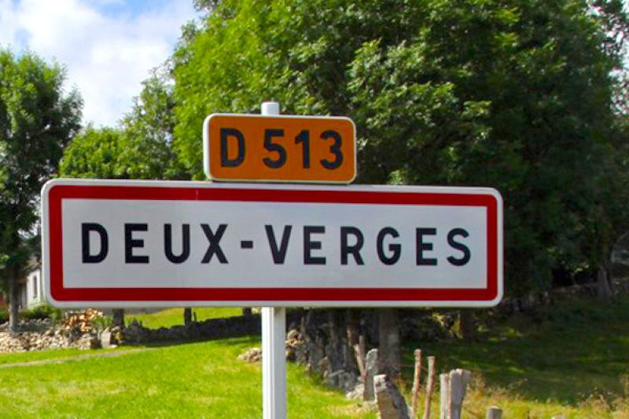
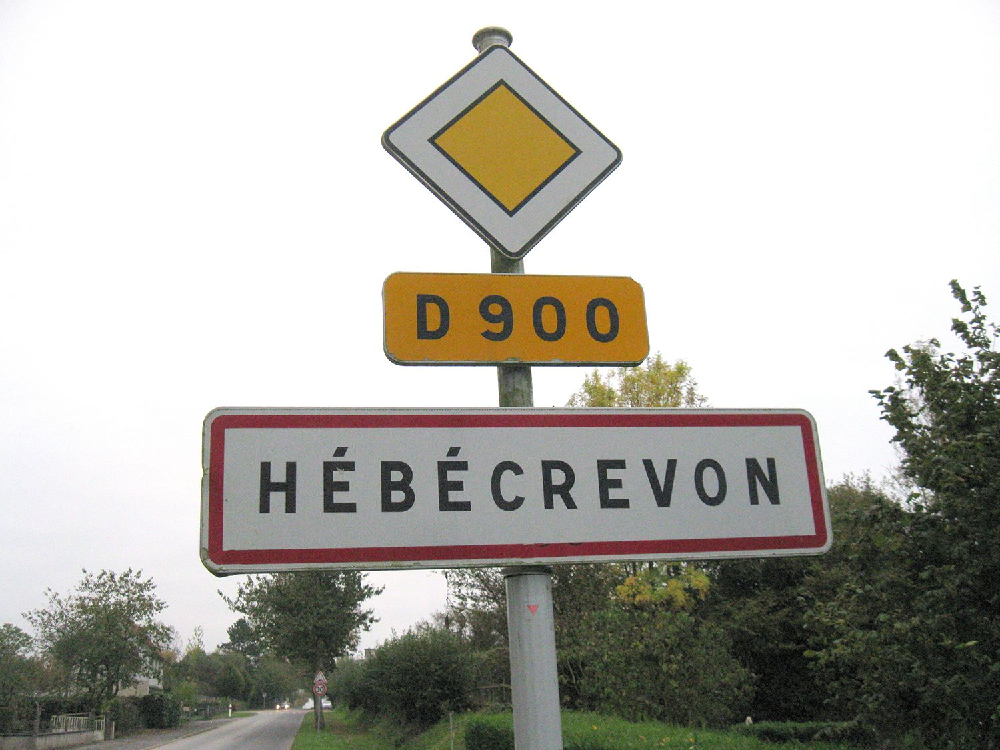
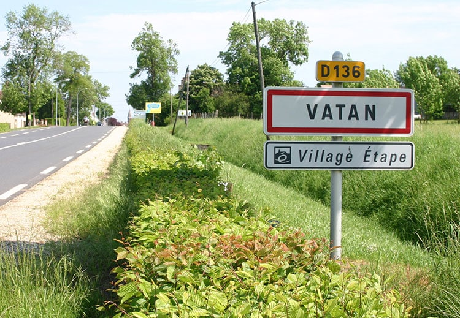

| Top | Nom |
|
Gentilé | Nombre d'habitants | Description | Panneau | Localisation |
|---|---|---|---|---|---|---|---|
| 1 | Deux-Verges |
|
Crandellois | 55 | Situé à 959m d’altitude, Deux-Verges (15110) est une commune située dans le département du Cantal. Cette commune fait partie des moins denses de France avec moins de 40 habitations et environ 50 habitants. Au delà de sa place dans notre classement des noms de villages insolites, vous pouvez visiter l’église de Saint-Médard à Deux-Verges. |  |
|
| 2 | Hébécrevon |
|
Hébécrevonnais | 1134 | Encore une ancienne commune de France qui eut porté un des noms de villages insolites. Fusionnée en 2016 avec la commune de Thèreval (50239). En patois normand, Hébécrevon signifie “le chevron d’Hébert”. Le chevron n’est ni plus ni moins qu’une pièce de bois (une poutre) clef au fonctionnement d’un petit pont nécessaire à la traversée d’un gué. |  |
|
| 3 | Vatan |
|
Vatanais | 1994 | Il n’y a rien de plus repoussant que de porter le nom « Vatan ». Et pourtant, c’est bien l’appellation choisie pour un village dans l’Indre. Bien que les touristes se font prier de partir en lisant la plaque à l’entrée du village, cela ne les empêche pas pour autant, par curiosité, d’y entrer. Toutefois, certains pourraient prendre le message au sérieux et passer leur chemin, en rejoignant plutôt la ville de Bourges qui se trouve à côté. |  |